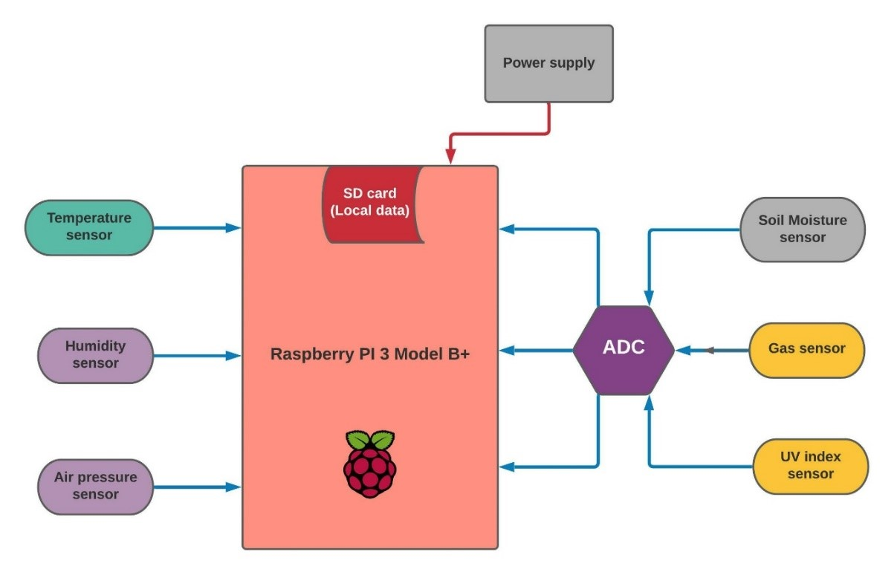

Intro
The sole purpose of micro weather station is to gather/collect major weather attributes like temperature, humidity, soil moisture, luminous intensity, air pressure and air quality at remote location with most effective and cost-efficient manner with the help of micro weather station equipment.
Raspberry Pi is interfaced with various sensors using general purpose input output (GPIO) pins. The Raspberry Pi has an inbuilt SD card slot that helps to fetch and store data. All the data fetched are time tagged from the Raspbian OS, in addition to this the system is Geo-tagged which gives the location of weather station. The data fetched by Raspberry Pi will then be pushed to Web server where the required calculations are made and displays the data in terms of table/graph with the help of Webpage in real-time. This enables the user an easy and reliable way to understand the data and make further decisions accordingly. The data collected over time can be used for various purposes such as weather prediction, study the change in weather pattern and for research purposes. The supply for the micro weather station system is provided by the help of a battery and a solar panel.